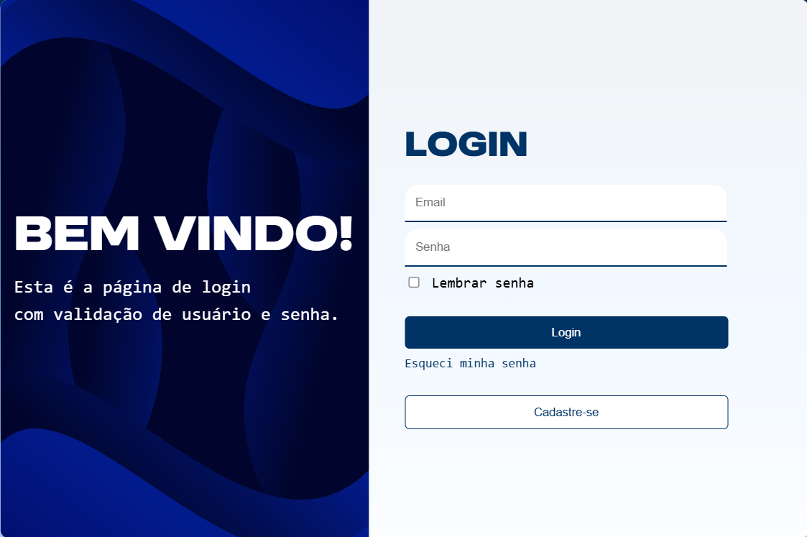

Desenvolvedor Front-end • Estudante de Engenharia de Software
Gosto de criar interfaces modernas, responsivas e intuitivas, sempre buscando escrever código limpo e evoluir a cada projeto.


Tenho 19 anos, moro em Guarulhos (SP) e atualmente curso Engenharia de Software. Sou movido pela curiosidade, gosto de aprender na prática e estou sempre em busca de novos desafios que contribuam para minha evolução pessoal e profissional.
Antes de ingressar na área de tecnologia, atuei como professor de bateria de forma autônoma. Essa experiência desenvolveu minha comunicação, responsabilidade, disciplina e capacidade de lidar com diferentes pessoas e situações.
Estou construindo minha carreira em tecnologia e vejo cada projeto como uma oportunidade de aprender, evoluir e criar soluções que realmente gerem impacto. Acredito que dedicação e aprendizado contínuo são a base para um bom profissional.
Me formei no ensino médio e me tornei Jovem Aprendiz
Iniciei a graduação em Engenharia de Software
Primeiros projetos web
Foco em projetos escaláveis e boas práticas
 Desenvolvimento Front-end
Interfaces Responsivas Versionamento com Git/GitHub
Componentização de Interfaces
Experiência do Usuário
Desenvolvimento Front-end
Interfaces Responsivas Versionamento com Git/GitHub
Componentização de Interfaces
Experiência do UsuárioAlguns dos projetos que venho desenvolvendo ao longo da minha jornada de aprendizado, colocando em prática conhecimentos, explorando novas tecnologias e evoluindo como desenvolvedor front-end.
Portfólio pessoal desenvolvido para apresentar minha trajetória, habilidades e projetos de forma organizada. O projeto foi criado com foco em design moderno, responsividade e uma experiência de navegação intuitiva.
 02
Cliente real
02
Cliente real
Sistema desenvolvido para otimizar o cálculo de fretes de uma transportadora, oferecendo uma interface prática e organizada para agilizar os cálculos, reduzir erros e facilitar o controle das informações no dia a dia.
Aplicação web que permite calcular o Índice de Massa Corporal (IMC) a partir da altura e do peso informados pelo usuário, apresentando o resultado e sua respectiva classificação.

04Projeto de uma tela de autenticação com design limpo e responsivo, priorizando usabilidade, organização visual e boas práticas de desenvolvimento front-end.
 Baixar CV
Baixar CV